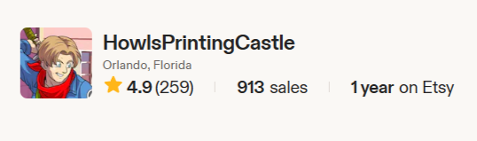

Case Study / Product Design
3D Printed LED Lightsticks
A self-directed product experiment that turned custom 3D printed concert lightsticks into a fast-moving Etsy storefront with about 600 sales in five months.- Role
- Founder / Product Designer
- Focus
- Physical product, storefront UX, fulfillment
- Timeline
- Placeholder case study

Found a niche with real demand
Designed around a highly specific fan need, then used storefront signals and buyer questions to refine the offer.
Balanced craft and fulfillment
The work required product design decisions across form, materials, packaging, repeatability, and customer expectation setting.
Built a measurable sales story
About 600 sales in five months gives this project a useful business lens beyond the artifact itself.